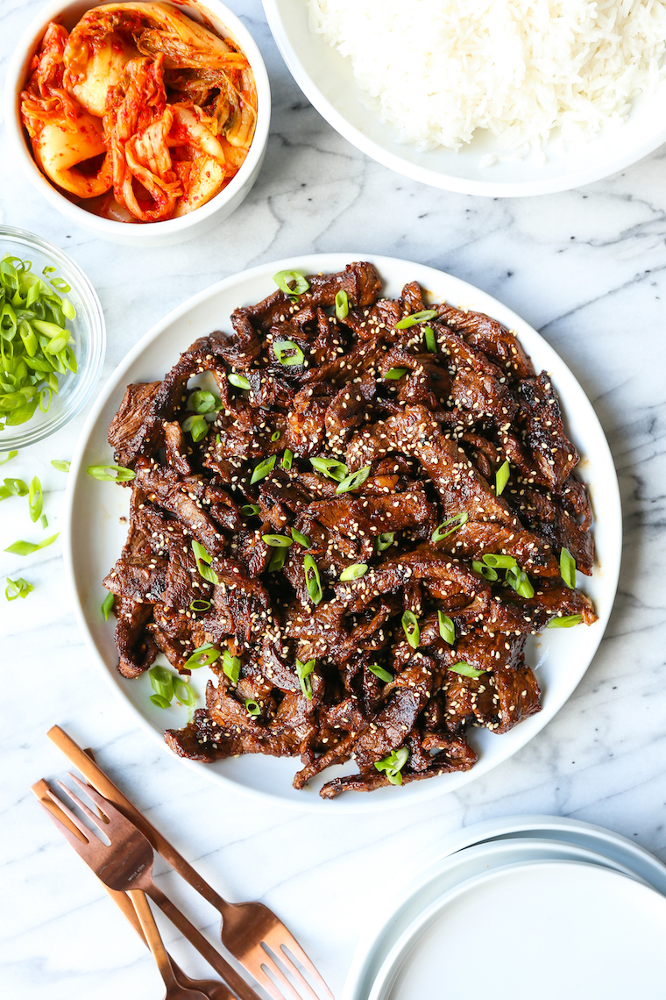

Korean Bulgogi

Description
Korean Bulgogi is a thinly sliced beef marinated in a "Bulgogi" sauce.
The sauce usually includes soy sauce, sugar, garlic, onion, sesame oil, and ginger.
It is a popular dish in Korea as it's relatively easy and quick to make. Usually making the
right sauce is the tricky part, and there's usually no single way of making this sauce.
Often served with rice and kimchi.
Ingredients (for two)
- 400g boneless rib eye, thinly sliced
- 3 tablespoon of soy sauce
- 2 tablespoon of brown sugar
- 1 tablespoon of garlic, crushed
- 1 tablespoon of ginger, crushed
- 1 tablespoon of 2 green oninons, sliced
- 2 teaspoon of sesame oil
- vegetable oil, sesame seeds, black pepper
- 2 tablespoon of ricewine(optional)
- 1 small pear, peeled and coarsely grated (optional)
Steps
- In a medium bowl, combine soy sauce, brown sugar,
garlic,ginger,sesame oil, and pear.
- In a Ziploc bag, combine above mixture and rib eye.
Marinate for at least 2 hours for optimal taste.
- Heat 1 tablespoon vegetable oil in a grill pan over
medium-high heat. Add rib eye to grill pan.
- Add water occasionally to prevent burning.
- spray 1 teaspoon of black peppers
- Serve with garnished green onions and sesame seeds.